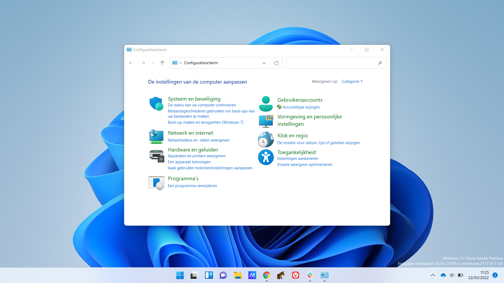
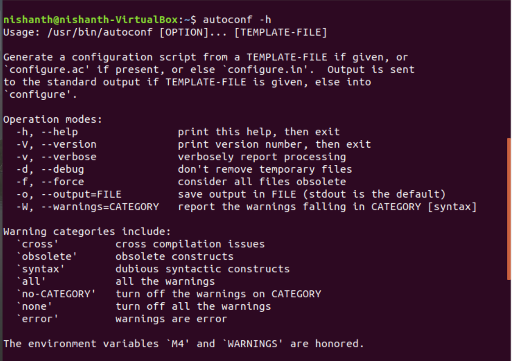

Automatische Configuratiebeheer
Het handmatig beheren van configuraties in grote IT-omgevingen is inefficiënt en foutgevoelig. Dit project richt zich op het gebruik van configuratiebeheertools om consistentie te waarborgen en tijd te besparen.
Microsoft
Implementatie van Tools
Implementeer tools zoals Ansible, Puppet of Chef om configuraties te automatiseren. Maak gebruik van configuratiescripts (playbooks of manifests) om wijzigingen uit te rollen naar meerdere apparaten tegelijk. Bijvoorbeeld, configureer standaardinstellingen op alle routers, installeer software op servers of stel firewallregels in.
Versiebeheer en Auditing
Integreer een versiebeheersysteem zoals Git om wijzigingen in configuraties bij te houden. Hierdoor kun je eenvoudig terugkeren naar een vorige versie bij problemen. Gebruik daarnaast auditlogs van de configuratiebeheertools om inzicht te krijgen in wie welke wijzigingen heeft aangebracht en wanneer, wat essentieel is voor beveiliging en compliance.
geeksforgeeks